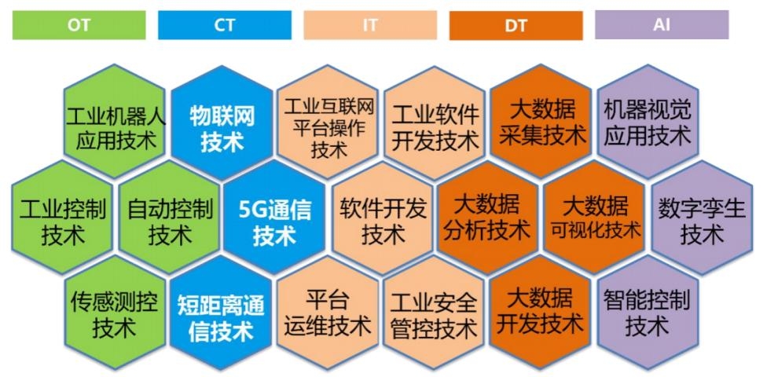
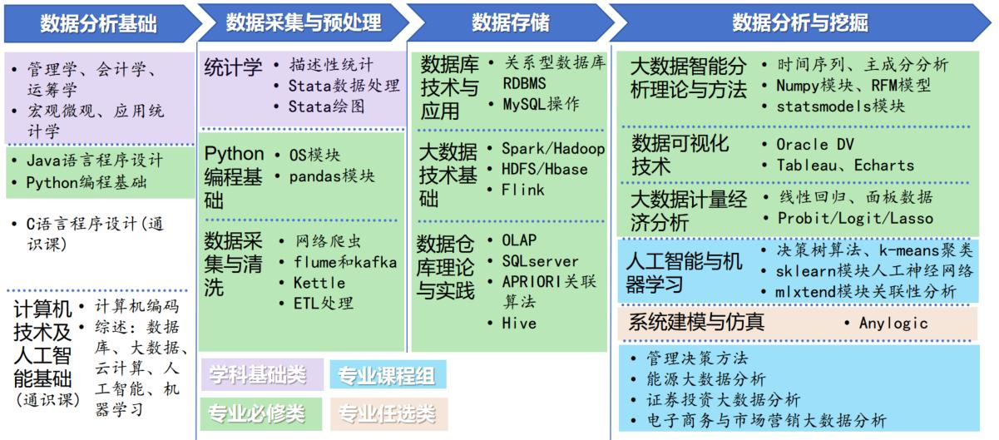
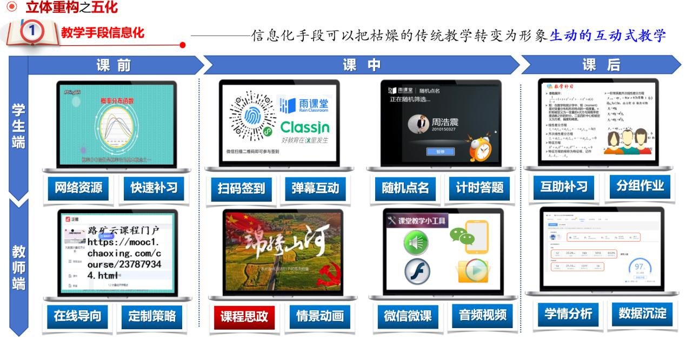
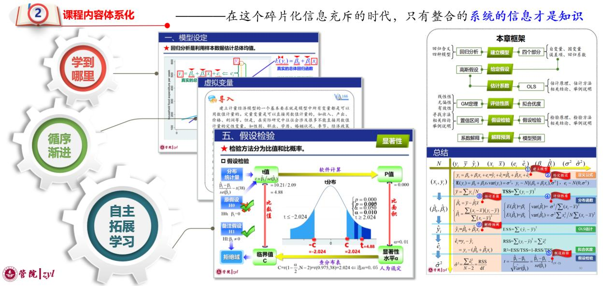
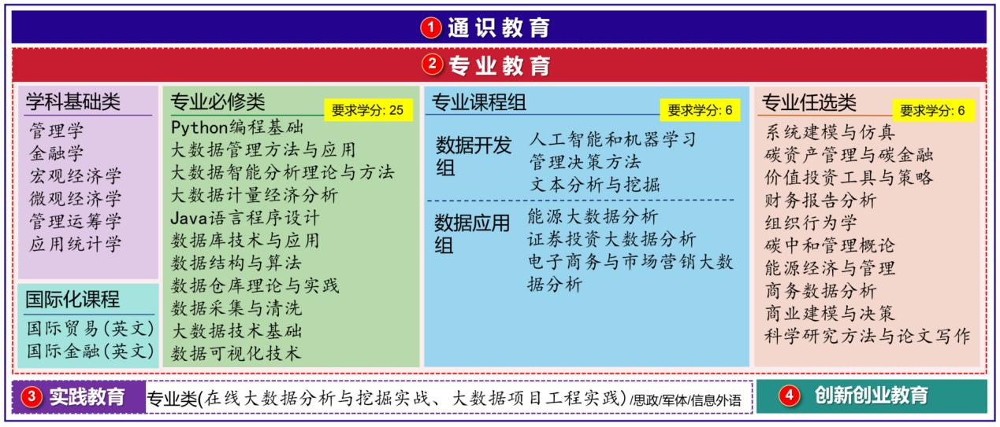
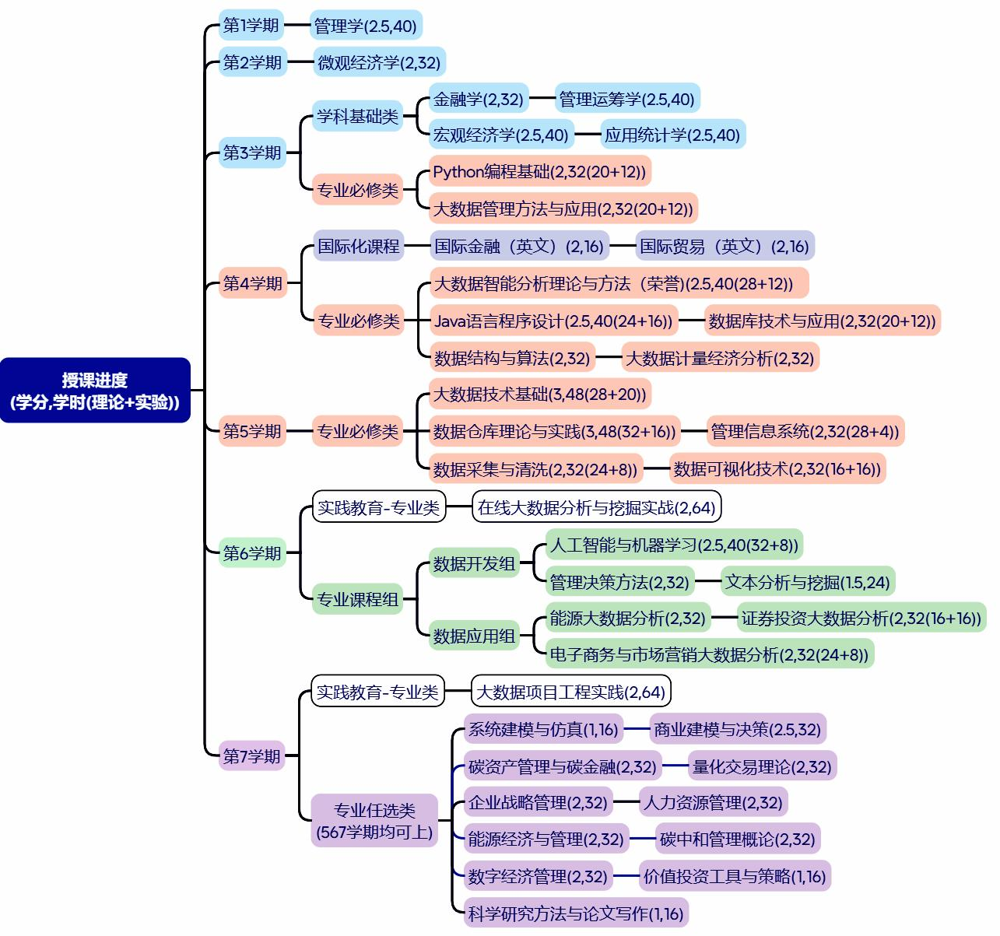
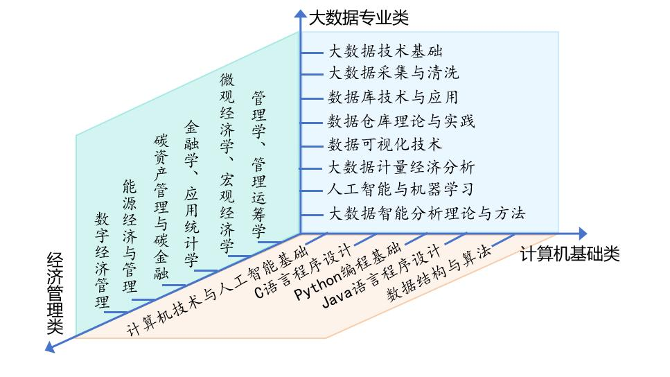

打通"知识链（K-Chain）"，即将一系列知识元组织成动态调整、相互链接、相互渗透、相互传播、整体增益的过程。新文科的"新"强调新的思维模式与学科交叉融合的协同建设，促进学生的计算思维、管理思维、跨学科思维和关联思维的培养。
经过探索与实践，本专业课程架构设计形成了覆盖大数据处理全流程的知识脉络、模块化跨领域的课程体系、"OBE逆向设计"的培养方案、递进分布的学期安排，构建了以知识点为信号、以课程为节点、以学期为单元，"产学研"多元主体之间构成相互映射有效衔接的教学网络。
OBE（Outcome-based Education）模式，即成果导向教育，基于明确的结果和预期的产出，逆向进行课程设计。培养方案设计的起点是岗位人才需求，由此制定了由产业岗位需求倒推专业建设的方案与机制。
具体而言，将相关职位如数据科学家、数据架构师、大数据开发工程师、数据产品经理和数据库工程师等数据分析类职位需求与该专业毕业生能力培养进行匹配，进而根据岗位需求梳理技能体系，建立数字技术人才能力图谱（图1），再由此推导出课程体系，从而完成培养方案设计。
全新设计了24门大数据专业课程，明确各门课程甚至每课程中具体模块对实现最终目标的贡献。此部分工作主要在2021年6月—12月之间陆续完成。
能力图谱
设计
制定
编写

实现大数据处理流程知识点全覆盖
以"大数据认识→大数据基础→大数据采集→大数据存储→大数据平台→大数据处理分析→大数据挖掘→大数据展示→典型行业应用融合→大数据综合项目实战"为主线，课程内容按学期与学年逐步递进。
认识
基础
采集
存储
平台
分析
挖掘
展示
融合
实战
有组织性的开展说课活动
定期组织不同教师分享课程内容安排，同系老师均参与聆听，统一协调统筹规划课程知识点在不同课程之间的分布情况和难易程度，串联所有课程中的技术与方法，做到不同课程重点突出又有序链接。
不同方向均有主干课程牵头
- 以金融学为核心，形成证券投资大数据分析、碳资产管理与碳金融、价值投资工具与策略组成的金融方向模块
- 以微观和宏观经济学为核心，衔接应用统计学、大数据计量经济分析、能源经济与管理、数字经济管理等课程
- 以Java语言程序设计为核心，衔接系统建模与仿真
- 以大数据技术基础为核心，衔接人工智能与机器学习、量化交易理论等
由此形成了无单一孤立课程、不同课程之间均有衔接的课程网络。

"12345"调整方向，是指：
- 1以培养数据素养为一个核心
- 2理论学时与上机学时两方面并重
- 3涵盖专业知识链+拓展能力链+实践创新链"三链"目标
- 4实施"整合教学内容+融合教学模式+结合教学育人+混合教学形态"的"四合"举措
- 5教学实施方面进行"教学手段信息化+课程内容体系化+方式方法体验化+重点难点规律化+考评反馈一体化"的"五化"转变


模块化结构
在通识教育、创新创业教育和专业教育三个层次结构的基础上，进一步梳理出"学科基础类课程"、"专业必修类课程"、"专业课程组"、"实践教育-专业类课程""专业任选类课程"等类别。
学期安排上递进式分布
例如，学生在第三学期集中学习"学科基础类"课程，第四学期和第五学期则集中学习"专业必修类"课程，课程内容按学期与学年逐级递进。



知识链建设总结
通过对课程架构横向与纵向多层次的立体重塑，形成了：
- 覆盖大数据处理全流程的知识脉络
- 模块化跨领域的课程体系
- "OBE逆向设计"的培养方案
- 递进分布的学期安排
从而使学生达到"硬性技术+柔性知识+跨界融合知识"三维技能素养有效耦合，"大数据思维+计算机思维+经济管理思维"三种思想范式有机结合的效果。